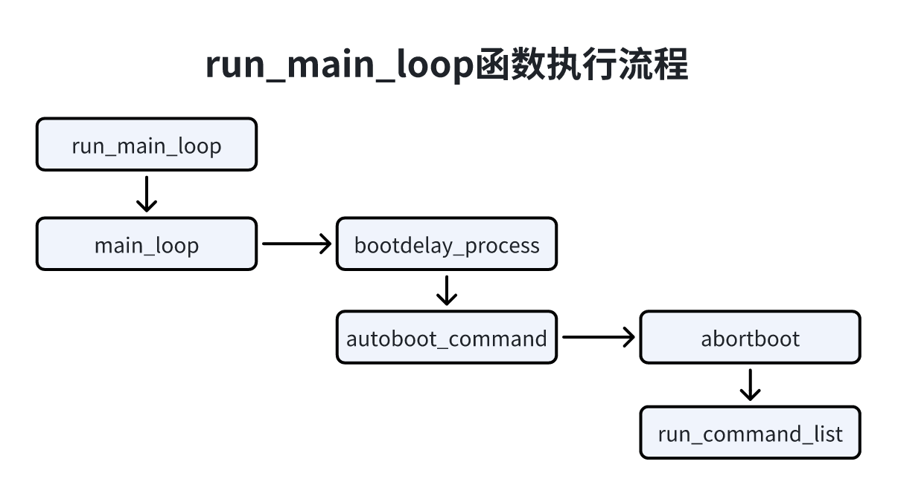
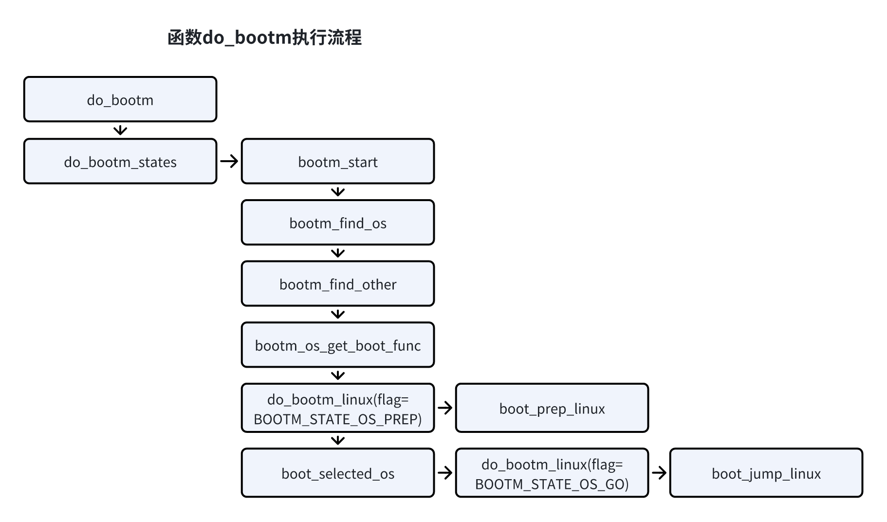
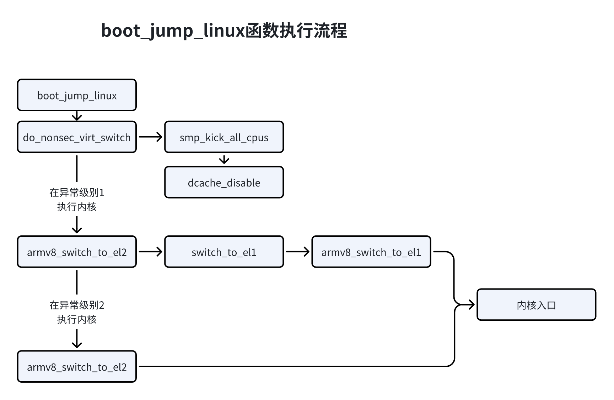
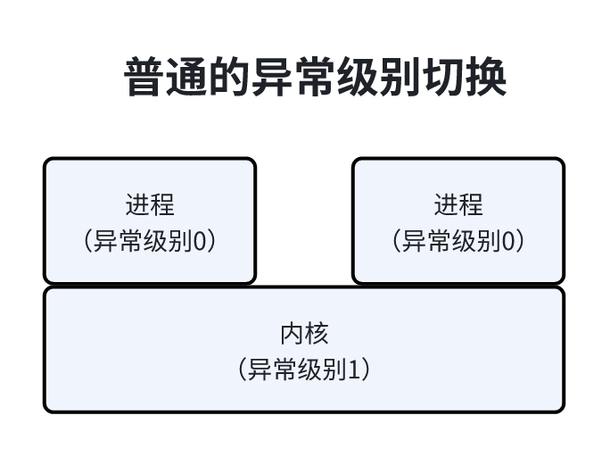
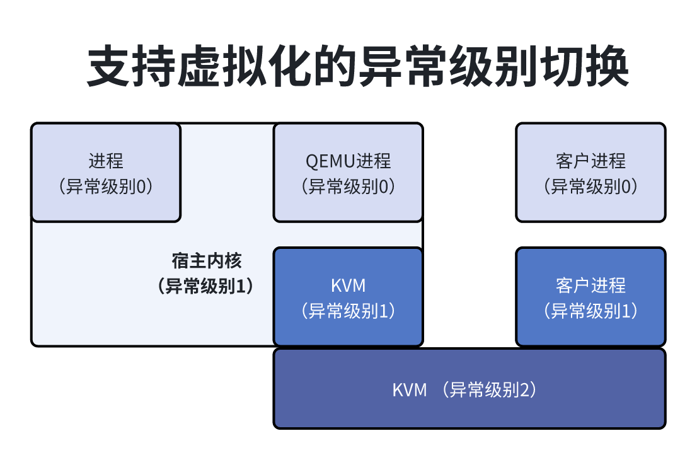
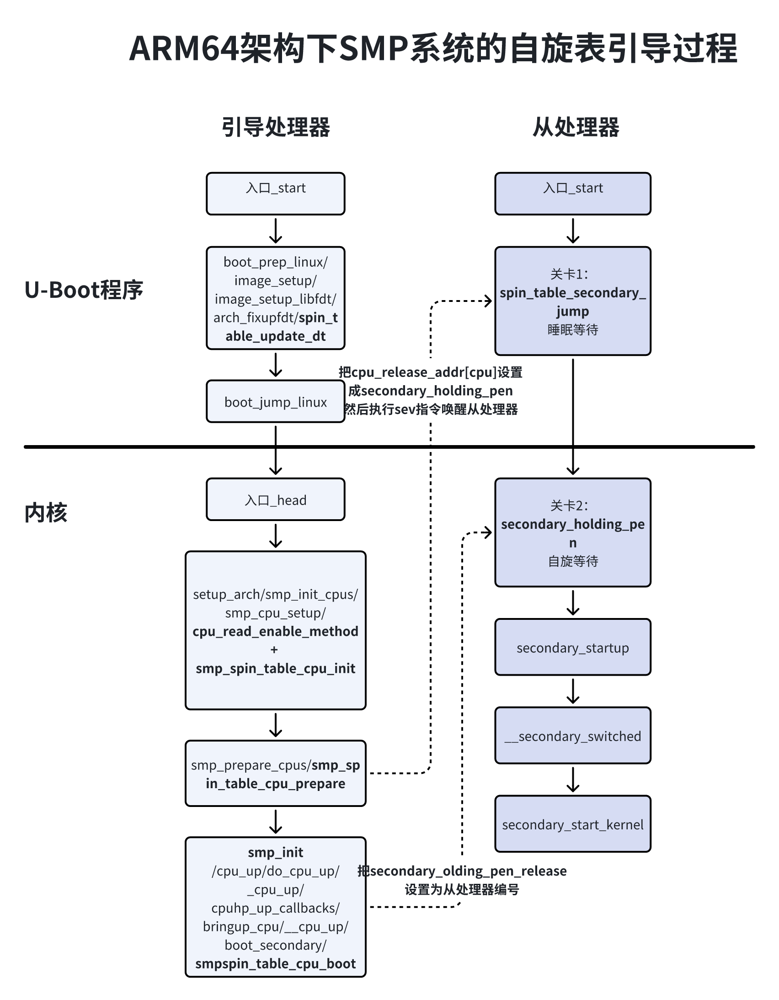

处理器通电后首先会执行引导程序，引导程序会把内核加载到内存中，然后执行内核，内核初始化完成后，启动用户空间的第一个进程。
处理器到哪里读取引导程序的指令？处理器在通电时会自动把程序计数器设置为处理器厂商设计的某个固定值，对于ARM64处理器来说，这个固定值是0。处理器的内存管理单元（Memory Management Unit，MMU）负责把虚拟地址转换为物理地址，ARM64处理器刚通电时没有开启内存管理单元，物理地址和虚拟地址相同，所以ARM64处理器到物理地址0取第一条指令。
嵌入式设备通常是使用NOR闪存作为只读存储器来存放引导程序。NOR闪存的容量比较小，最小读写单位是字节byte，程序可以直接在芯片内执行。从物理地址0开始的一段物理地址空间被分配给NOR闪存。
综合来说，ARM64处理器到虚拟地址0取指令，就是到物理地址0取指令，也就是到NOT闪存的起始为止取指令。
嵌入式设备通常使用U-Boot作为引导程序，U-Boot（Universal Boot Loader）是德国DENX软件工厂中心开发的引导程序，是准许GPL条款的开源项目。
标号_start是U-Boot程序的入口，直接跳转到标号reset执行。
1// U-Boot程序位置：arch/arm/cpu/armv8/start.S2 3 4.globl _start5_start:6b reset从标号reset开始的代码如下：
x1//启动程序位置：arch/arm/cpu/armv8/start.S2reset:3
4// 调用各种办卡自定义的函数save_boot_params来保存重要的寄存器5b save_boot_params6.globl save_boot_params_ret7save_boot_params_ret:8
9// 调用reset_sctrl来初始化系统控制寄存器，由配置宏CONFIG_SYS_RESET_SCTRL控制11// 一般不需要打开12bl reset_sctrl13 15/*16* 异常级别可能是3、2或者1，初始状态:17* 小端字节序，禁止MMU，禁止指令/数据缓存18*/19adr x0, vectors20 21// 根据处理器当前的异常级别设置寄存器22switch el x1, 3f, 2f, 1f23 /**24 * 如果异常级别为3，把向量基准地址寄存器(vbar_el3)设置为异常向量的起始地址；25 * 设置安全配置寄存器(scr_el3)的ns、irq、fiq、和ea这4个位，也就是异常级别0和1处于非安全状态26 * 在任何异常级别执行都把中断、快速中断、同步外部终止和系统错误转发到异常级别3；27 * 把协处理器陷入寄存器（cptr_el3）设置为0，允许访问浮点和单指令多条数据功能（SIMD）；28 * 设置计数时钟频率寄存器（cntfrq_el0）29 */30 3:mrs vbar_el3, x031 msr x0, scr_el332 orr x0, x0, #0xf // 设置寄存器SCR_EL3的NS、IRQ、FIQ和EA四个位33 msr scr_el3, x0 34 msr cptr_el3, xzr // 启用浮点和SIMD功能35 36 ldr x0, = COUNTER_FREQUENCY37 msr cntfrq_el0, x038 39 b 0f40 41 /**42 * 如果异常级别是2，把向量基准地址寄存器（vbar_el2）设置为异常向量表的起始地址，43 * 设置协处理器陷入寄存器（cptr_el2）允许访问浮点和SIMD功能44 */45 2: msr vbar_el2, x046 mov x0, #0x33ff47 msr cntfrq_el10, x0 // 启用浮点和SIMD功能48 b 0f49 /**50 * 如果异常级别是1，把向量基准地址寄存器（vbar_el1）设置为异常向量表的起始地址，51 * 设置协处理器访问控制寄存器（cptr_el1）允许访问浮点和SIMD功能52 */53 1: msr vbar_ell x0 54 mov x0, #0x33ff55 msr cntfrq_el10, x0 // 启用浮点和SIMD功能56 0:57 ....58 59 // 应用ARM处理器特定的勘误表 为处理器打的补丁60 bl apply_core_errata61 62 /**63 * 处理器特定的初始化64 * 65 * 调用函数lowlevel_init执行函数board_init_f()所需的最小初始化，66 * 当前文件定义了弱符合类型的函数lowlevel_init，处理器厂商可以自定义强符合类型的函数67 * lowlevel_init来覆盖从处理器68 */69 bl lowlevel_init70
71/**72 * 如果是多处理器系统，那么只有一个处理器是主处理器(也称为引导处理器)，73 * 其他处理器是从处理器。74 */75// 如果使用自旋表启动方法，并且不是编译为第二程序加载器，76// 那么处理器执行函数spin_table_secondart_jump(arch/arm/cpu/armv8/ spin_table.c)77// 函数执行过程，从处理器进入低功耗状态，它被唤醒的时候，从地址spin_table_cpu_release_addr读取函数地址78// 如果主处理器还没有指定函数地址会继续等待；如果主处理器指定了函数地址，就跳转到指定函数地址进行执行79 branch_if_master x0, x1, master_cpu81 b spin_table_secondary_jump82
83// 如果允许多个处理器进行引导程序，name从处理器进入低功耗状态，它被唤醒的时候，从地址CPU_RELEASE_ADDR84// 读取函数地址，如果主处理器还没有指定函数地址会继续等待，如果主处理器指定了函数地址就跳转到指定的函数执行85 branch_if_master x0, x1, master_cpu87 // 从处理器88 slave_cpu:89 wfe90 ldr x1, =CPU_RELEASE_ADDR91 ldr x0, [x1]92 cbz x0, slave_cpu93 br x0 // 跳转到指定地址94// CONFIG_ARMV8_MULTIENTRY95 96 97master_cpu:98 // 主处理器执行函数_main99 bl _main第二段程序加载器，U-Boot分为SLP和正常的U-Boot程序两个部分，如果想要编译为SPL，需要开启配置宏CONFIG_SPL_BUILD.SPL是"Second Program Loader"第二阶段程序加载器，第二阶段是相对于处理器里面的只读存储器中的固化程序来说的，处理器启动时最先执行的是只读存中的固化程序。
固化程序通过检测启动方式来加载第二段程序加载器，为什么需要第二阶段程序加载器？是因为一些处理器内部集成的静态随机访问存储器比较小，无法状态一个完成的U-Boot镜像，此时需要第二阶段程序加载器，它主要负责初始化内存和存储设备驱动，然后把正常的U-Boot从存储设备读到内促中执行。
_main函数代码：
1301// U-Boot位置：arch/arm/lib/crt0_64.S2
3ENTRY(_main)4
5/*6 * 设置初始化的C语言运行环境，并且调用borad_init_f(0)7 */8 ldr x0, =(CONFIG_TPL_STACK)10 ldr x0, =(CONFIG_SPL_STACK)12 // 设置临时的栈15 adrp x0, __bss_start /* 为了符合应用二进制接口规范，对其16字节 */16 add x0, x0, #:lo12:__bss_start17 adr x0, __bss_start19 add x0, x0, #CONFIG_SYS_INIT_SP_BSS_OFFSET21 ldr x0, =(SYS_INIT_SP_ADDR)23 bic sp, x0, #0xf /* 16-byte alignment for ABI compliance */25 mov x0, sp26 // 调用此函数在栈顶为结构体global_data分配空间27 bl board_init_f_alloc_reserve28 mov sp, x029 /* 设置gd */30 mov x18, x031 // 调用此函数初始化结构体global_data32 bl board_init_f_init_reserve33
34 bl debug_uart_init36
38 mov x0, #039 // 调用此函数执行前期初始化，为了把u-boot程序复制到内存中来执行，初始化硬件40 // 做准备工作，在common/board_f.c中定义，会依次执行数组init_sequence_f中的每个函数41 bl board_init_f42
43/**44 * 如果编译为正常的引导程序，那么调用函数 relocate_code，45 * 把 U-Boot 程序复制到内存中，重新定位，然后调用函数 c_runtime_cpu_setup，46 * 把向量基准地址寄存 器设置为异常向量表的起始地址。47 * 这里是分界线，以前处理器从 NOR 闪存取指令，这一步 执行完以后处理器从内存取指令。48 */49 51 /**52 * 设置中间环境（新的栈指针和gd），然后调用函数53 * relocate_code (addr_moni)54 */55 ldr x0, [x18, #GD_START_ADDR_SP] /* 把寄存器x0设置为gd->start_addr_sp */56 bic sp, x0, #0xf /* 为了符合应用二进制接口规范，对其16字节 */57 ldr x18, [x18, #GD_NEW_GD] /*新的gd在bd的下面 */58 59 ldr x0, [x18, #GD_FLAGS] /* x0 <- gd->flags */60 tbnz x0, 11, relocation_return /* GD_FLG_SKIP_RELOC is bit 11 */61
62 adr lr, relocation_return63 /* Add in link-vs-runtime offset */65 adrp x0, _start /* x0 <- Runtime value of _start */66 add x0, x0, #:lo12:_start67 ldr x9, _TEXT_BASE /* x9 <- Linked value of _start */68 sub x9, x9, x0 /* x9 <- Run-vs-link offset */69 add lr, lr, x970 ldr x0, [x18, #GD_ENV_ADDR] /* x0 <- gd->env_addr */72 add x0, x0, x973 str x0, [x18, #GD_ENV_ADDR]74 /* Add in link-vs-relocation offset */77 ldr x9, [x18, #GD_RELOC_OFF] /* x9 <- gd->reloc_off */78 add lr, lr, x9 /* new return address after relocation */79 ldr x0, [x18, #GD_RELOCADDR] /* x0 <- gd->relocaddr */80 b relocate_code81
82relocation_return:83
84/*85 * 设置最终的完整环境86 */87 bl c_runtime_cpu_setup // 仍然调用旧的例程88/* !CONFIG_SPL_BUILD */89 90/*91 *如果编译为第二阶段程序加载器，那么调用函数 spl_relocate_ stack_gd 重新定位栈。92 */93 bl spl_relocate_stack_gd // 可能返回空指针96 cmp x0, #097 csel x18, x0, x18, ne98 /*99 * 执行sp = (x0 != NULL) ? x0 : sp;100 * 规避这个约束101 * 带条件的mov指令不能把栈指针寄存器作为操作数102 */103 mov x1, sp104 cmp x0, #0105 csel x0, x0, x1, ne106 mov sp, x0107
109/*110 * 用0初始化未初始化数据段111 */112 ldr x0, =__bss_start // 这是自动重定位113 ldr x1, =__bss_end // 这是自动重定位114clear_loop:115 str xzr, [x0], #8116 cmp x0, x1117 b.lo clear_loop118
119 /* 调用 board_init_r(gd_t *id, ulong dest_addr) */120 mov x0, x18 /* gd_t */121 ldr x1, [x18, #GD_RELOCADDR] /* dest_addr */122 // 调用函数board_init_r(r 是 rear，表示后期)，123 // 执行后期初始化。文件 “common/board_r.c”定义了函数 board_init_r，124 // 依次执行数组 init_sequence_r 中的每个函数125 b board_init_r /* 相对程序计数器的跳转 */126
127 /* 不会运行到这里，因为函数board_init_r()不会返回 */128
130ENDPROC(_main)在_main函数中会调用board_init_r函数 会执行init_sequence中的每个函数最后一个就是run_main_loop函数。
执行流程如图所示：

将主要工作委托给main_loop；
调用bootdelay_process来读取环境变量和bootcmd，环境变量bootdelay定义了延迟时间，就是等待用户按键的时间长度；环境变量bootcmd定义要执行的命令；
思考：U-Boot程序到哪里读取环境变量？
回答：通常我们把NOR闪存分为很多个分区，其中第一个分区会存放U-Boot程序，第二个分区存放环境变量，U-Boot程序里面的NOR闪存驱动程序对分区信息硬编码，指定每个分区的偏移和长度，U-Boot程序从环境变量分区读取环境变量。
调用函数autoboot_command，函数autoboot_command先调用函数abortboot，等待用户按键。如果在等待时间内用户没有按键，就调用run_command_list，自动执行环境变量bootcmd定义的命令。假如环境变量bootcmd定义的命令是bootm，函数run_command_list查找命令表，发现命令bootm的处理函数是do_bootm；
do_bootm执行流程如图所示：

将主要工作委托给了do_bootm_states；
函数bootm_start负责初始化全局变量"do_headers_images"；
函数bootm_find_os把内核镜像从存储设备读到内存；
函数bootm_find_other读取其他信息，对于ARM64架构，通常是扁平设备树（Flattened Device Tree， FDT）二进制文件，该文件用来传递硬件信息给内核；
函数bootm_load_os把内核加载到正确的位置，如果内核镜像是被压缩过的，需要解压缩；
函数bootm_os_get_boot_func根据操作系统类型在数组boot_os中查找引导函数，Linux内核的引导韩式do_bootm_linux；
第一次调用do_bootm_linux时，参数flag是BOOTM_STATE_OS_PREP，为执行Linux内核准备工作，函数do_bootm_linux(flag=BOOTM_STATE_OS_PREP)把工作委托给boot_prep_linux主要工作：
分配一块内存，把扁平设备数二进制文件复制过去；
修改扁平设备树二进制文件，例如，如果环境变量bootargs指定了内核参数，那么把节点"closen"的属性"bootargs"设置成内核参数字符串；如果多处理器系统使用自旋表启动方法，那么针对每个处理器对应的节点cpu，把属性"emable-method"设置为"spin-table"，把属性"cpu-release-addr"设置为全局变量spin_table_cpu_release_addr的地址；
函数boot_selected_os调用函数do_bootm_linux，这是第二次调用do_bootm_linux，参数BOOTM_STATE_OS_GO。函数do_bootm_linux(flag=BOOTM_STATE_OS_GO)调用函数bootm_jump_linux，该函数跳转到内核的入口，第一个参数是扁平设备树二进制文件的起始地址，后面3个参数现在没有使用；
函数boot_jump_linux负责跳转到Linux内核，流程图如下：

调用函数smp_kick_all_cpus，如果打卡了配置宏CONFIG_GICV2或者CONFIG_GICV3，即使用通用中断控制版本2或者版本3，那么发送中断请求以唤醒所有从处理器；
调用函数dcache_disable，禁用处理器缓存和内存管理单元；
如果开启配置宏CONFIG_ARMV8_SWITCH_TO_EL1，表示在异常级别1执行Linux内核，那么先从异常级别3切换到异常级别2，然后切换到异常级别1，最后跳转到内核入口；
如果在异常级别2执行Linux内核，那么异常级别3啊切换到异常级别2，然后跳转到内核入口；
内核初始化分为汇编语言部分和C语言部分。
ARM64的内核入口是标号_head，直接跳转到标号stext。
171// 位置：arch/arm64/kernel/head.S2
3_head:4 /*5 * DO NOT MODIFY. Image header expected by Linux boot-loaders.6 */7#ifdef CONFIG_EFI8 /*9 * This add instruction has no meaningful effect except that10 * its opcode forms the magic "MZ" signature required by UEFI.11 */12 add x13, x18, #0x1613 b stext14#else15 b stext // 跳转到内核起始位置16 .long 0 // 保留17#endif配置宏CONFIG_EFI表示提示UEFI运行时支持，UEFI（Unified Extensible Firmware Interface）是统一的可扩展固件的接口，用于取代BIOS。
标号stext开始的代码如下：
321ENTRY(stext)2 // 调用preserve_boot_args，把引导程序传递的4个参数保存在全局数组boot_args中3 bl preserve_boot_args4 // 调用els_setup，如果处理器当前异常级别是2，判断是否需要降级到异常级别15 // 看1.16 bl el2_setup // 降级到异常级别1，寄存器w7 adrp x23, __PHYS_OFFSET8 and x23, x23, MIN_KIMG_ALIGN - 1 // KASLR偏移，默认值是09 10 // 调用set_cpu_boot_mode_flag，根据处理器进入内核是的异常级别设置数组_boot_cpu_mode[2]11 // __boot_cpu_mode[0]的初始值是BOOT_CPU_MODE_EL2，__boot_cpu_mode[1]的初始值是BOOT_CPU_MODE_EL112 // 如果异常级别是1，那么把__boot_cpu_mode[0]设置为BOOT_CPU_MODE_EL1，13 // 如果异常级别是2，把__boot_cpu_mode[1]设置为BOOT_CPU_MODE_EL2，14 bl set_cpu_boot_mode_flag15 16 // 调用__create_page_tables函数，创建页表映射17 // 看1.218 bl __create_page_tables19 /*20 * 下面是用设置处理器的代码，请看文件"arch/arm64/mm/proc.S"21 * 了解细节22 * 返回的时候，处理器洗衣精为开启内存管理单元做好准备，23 * 转换控制寄存器已经设置好24 */25 // 调用__cpu_setup函数为开启处理器的内存管理单元做准备，初始化处理器26 bl __cpu_setup // 初始化处理器27 28 // 调用函数__primary_switch为主处理器开启内存管理单start_kernel29 // 进入C语言换将的入口函数start_kernel30 // 看1.331 b __primary_switch32ENDPROC(stext)进入内核的时候ARM64处理器的异常几倍可能是1或者2，函数el2_setup主要工作就是如果异常级别是1就在执行异常级别1内核；如果异常级别为2，就根据处理是否支持虚拟化宿主扩展（Virtualization Host Extensions， VHE）决定是否需要降级到异常级别1。
如果处理器支持虚拟化宿主扩展，那么在异常级别2执行内核；
不支持就降级到异常级别1执行内核；
ARM64处理器的异常级别和虚拟话宿主扩展介绍：
如图所示，通常ARM64处理器在异常级别0执行进程，在异常级别1执行内核。

虚拟机时现在流行的虚拟技术，在计算机上创建一个虚拟机，在虚拟机上运行一个操作系统，运行虚拟机的操作系统叫做宿主操作系统(host OS)，虚拟机中运行的系统叫做客户操作系统(guest OS)。
现在常用的虚拟机是基于内核的虚拟机（Kernel-based Virusal Machine , KVM）KVM的主要特定是可以直接在处理器上执行客户操作系统，因此虚拟机的执行速度非常快，KVM是内核的一个模块，把内核编程虚拟机监控程序，如图所示，宿主操作系统中的进程在异常级别0运行，内核在异常级别1运行，KVM模块可以穿越异常级别1和异常级别2；客户操作系统中的进程在异常级别0运行，内核在异常级别1运行。

常用的开源虚拟管理软件时QEMU，QEMU支持KVM虚拟机，使用QEMU创建一个KVM虚拟机和KEM的交互过程如下：
打开KVM字符设备文件；
11fd = oepn("/dev/kvm", O_RDWR);创建一个虚拟机，QUEM进程得到一个管理的虚拟机的文件描述符；
11vmfd = iotl(fd, KVM_CREATE_VM, 0);QEMU为虚拟机模拟多个处理器，内个处理器就是一个线程，调用KVM提供命令KVM_CREATE_VCPU，KVM为每个虚拟处理器创建一个kvm_cpu结构体，QEMU进程得到一个管理虚拟处理器的文件描述符；
11vcpu = iotl(vmfd, KVM_CREATE_VCPU, 0);
111从QEMU切换到客户操作系统的过程如下：21. QEMU进程调用`ioctl(vcpu_fd, KVM_RUN, 0)`，陷入到内核；42. KVM执行命令kVM_RUN，从异常级别1切换到异常级别2；63. KVM首先把调用进程的所有寄存器保存到kvm_cpu结构体中，然后把所有寄存器设置为客户操作系统的寄存器值，最后异常级别2返回的异常级别1，执行客户操作系统。8如下图所示，为了提高切换速度，ARM64架构引入了虚拟话宿主扩展，在异常级别2执行锁住操作系统的内核，从QEMU切换到客户操作系统的时候，KVM不再需要从异常级别1切换到异常级别2；10<img src=".assets/006.png" alt="006" style="zoom:40%;" />
__create_page_tables函数主要是创建恒等映射（identity mapping）；为内核镜像创建映射。
恒等映射的特点是虚拟地址和物理地址相同，是为了在开启处理器的内存管理单元的一瞬间能够平缓过渡。函数__enbale_mmu负责开启内存管理单元，内核把函数 __enable_mmu附近的代码放在恒等映射代码节（.idmap.text）里面，恒等映射代码节的起始地址存放在全局变量__idmap_text_start中，结束地址存放在全局变量__idmap_text_end中。
恒等映射时为恒等映射代码节创建的映射，idmap_pg_dir是恒等映射的全局目录（即第一级页表）的起始地址。
在内核的页表中为内核镜像创建映射，内核镜像的起始地址是_text，结束地址是_end，swapper_pg_dir是内核的页全局目录的起始地址。
__primary_switch主要调用__enable_mmu以开启内存管理单元；调用函数__primary_switched。
__enable_mmu主要执行流程如下：
1. 把转换表基准寄存器0（TTBR1_EL0）设置为恒等映射的页全局目录的起始物理地址；
2. 把转换表基准寄存器1（TTBR1_EL1）设置为内核的页全局目录的起始物理地址；
3. 设置系统控制寄存器（SCTLR_EL1）开启内存管理单元，以后执行程序时内存管理单元会把虚拟地址转换为物理地址；
__primary_switched的执行流程如下：
1. 把当前异常级别的栈指针寄存器设置为0号线程内核栈的顶部（init_thread_union + THREAD_SIZE）
2. 把异常级别0的栈指针寄存器（SP_EL0）设置为0号线程的结构图thread_info的地址（init_task.thread_info）
3. 把向量基准地址寄存器（VBAR_EL1）设置为异常向量表的起始地址（vetors）；
4. 计算内核惊醒的起始虚拟地址（kimage_vaddr）和物理地址的差值保存在全局变量kimage_voffset中；
5. 用0初始化内核的未初始化数据段；
6. 调用C语言函数start_kernel；
内核初始化的C语言部分入口是函数start_kernel，会首先初始化基础设施，即初始化内核各个子系统，然后调用函数rest_init；
rest_init执行流程：
1. 创建1号线程，即init线程，线程数是kernel_init；
2. 创建2号线程，即kthread线程，负责创建内核线程；
3. 0号线程最终变成空闲线程；
init线程继续初始化，执行操作如下：
1. smp_prepare_cpus()：在启动从处理器以前执行准备工作；
2. do_pre_smp_initcalls()：必须在初始化SMP系统以前执行的早期初始化，即使用宏early_initcall注册的初始化函数；
3. smp_init()：初始化SMP系统，启动所有从处理器；
4. do_initcall()：执行级别0~7的初始化；
5. 打开控制台字符设备文件"/dev/console"，文件描述符0、1和2分表是标准输入、表述输出和标准错误，都是控制台的字符设备文件；
6. prepare_namespace()：挂载根文件系统，后面装载init时需要从设备上的文件系统中读取文件；
7. free_initmem()：释放初始化代码和数据占用的内存；
8. 装载init程序：U-Boot程序可以传毒内核参数init=指定init程序，从内核线程转换为用户空间的init进程；
级别0~7的初始化，是指使用以下宏注册的初始化函数：
201// 位置：include/linux/init.h2
3
4
6对称多处理器（Symmethric Multi-Processor，SMP）系统包含多个处理器，并且每个处理器的地位平等，在启动过程中，处理器的地位不是平等的，0号处理器称为引导处理器，负责执行引导程序和初始化内核；其他处理器称为从处理器，等待引导处理器完成初始化，阴道处理器初始化之后，启动从处理器。
引导处理器启动从处理器有3种方法：
1. 自旋表（spin-table）；
2. 电源状态协调接口（Power State Coordination PSCI）；
3. ACPI停车协议（parking-protocol），ACPI是高级配置与电源接口（Advanced Configuration and Powner Interface）；
思考：引导处理器是怎么获取从处理器的启动方法呢？
回答：是从cpu_read_enable_method方法中获取到的，如果引导处理器不支持ACPI，就会从扁平设备树二进制文件中"cpu"节点的属性"enable-method"读取从处理器的启动方法，可选的方法是自旋表活PSCI；如果支持ACPI，固定ACPI描述表（Fixed ACPI Description Table, FADT）设置了允许PSCI的引导标志，那么使用PSCI，否则使用ACPI停车协议。
如果使用自旋表启动方法，编译U-Boot程序时需要开启配置宏CONFIG_ARMV8_SPIN_TABLE如下图所示，SMP系统的引导过程：

从处理器的第一个关卡是U-Boot程序中的函数spin_table_secondary_jump，从处理器书面等待，被唤醒后，检查全局变量spin_table_cpu_release_addr的值不是0，如果是0继续等待。引导处理器将会把全局变量spin_table_cpu_release_addr的值设置为一个函数的地址；
U-Boot程序，引导处理器执行boot_prep_linux，为执行内核做准备工作，包括调用函数spin_table_update_dt，修改扁平设备树二进制文件如下：
为每个处理器的cpu节点插入一个属性cpu-release-addr，把属性值设置为全局变量spin_table_cpu_relesae_addr的地址，称为处理器执行地址；
在内存保留区（memory reserve map，对应的扁平设备，位置在"memreserve/"）添加全局变量spin_table_cpu_release_addr的地址；
引导处理器在内核函数smp_cpu_setup中，首先调用函数cpu_read_enable_method以获取从处理器的启动方法，然后调用函数smp_spin_table_cpu_limit，从扁平设备树二进制文件的cpu属性”cpu-release-addr“得到从处理器的放行地址；
引导处理器执行内核函数smp_spin_table_cpu_prepare，针对每个从处理器，把放行地址设置为函数secondary_holding_pen，然后唤醒从处理器；
从处理器被唤醒，执行函数secondary_holding_pen，这个函数设置了第二个关卡，当已到期把全局变量secondary_hlding_pen_release设置为从处理器的编号时，才会放行；
引导处理器完成内核的初始化，启动所有从处理器，针对每个从处理器调用函数smp_spin_table_cpu_boot，把全局变量secondary_holding_pen_release设置为从处理器的编号；
从处理器发现引导处理器把全局变量secondary_holding_pen_release设置为自己的编号，通过第二个关卡执行函数secondary)startup；
从处理器执行函数__secondary_switched：把向量基准地址寄存器（VBAR_EL1）设置为异常向量表的起始地址，设置栈指针寄存器，调用C语言部分的入口函数secondary_start_kenel；
从处理器执行C语言部分的入口函数secondary_start_kernel；
下边是扁平设备树源文件的一个片段，可以看到每个处理器对应一个"cpu"节点，属性"enable-method"指定启动方法，属性"cpu-release-addr"指定放行地址，需要通过字段"/memreserve/"把放行地址设置为内存保留区域，两个参数分配时起始地址和长度；
291// /memreserve/ 0x80000000 0x00010000;2
3{4...5 cpus {6 7 8
9 cpu@0 {10 device_type = "cpu";11 compatible = "arm,armv8";12 reg = <0x0 0x0>;13 enable-method = "spin-table"; cpu-release-addr = <0x0 0x8000fff8>; next-level-cache = <&L2_0>;14 }; 15
16 cpu@1 {17 device_type = "cpu";18 compatible = "arm,armv8";19 reg = <0x0 0x1>;20 enable-method = "spin-table"; cpu-release-addr = <0x0 0x8000fff8>; next-level-cache = <&L2_0>;21 };22
23 L2_0: l2-cache0 { 24 compatible = "cache";25 }; 26
27 };28... 29}; init进程是用户空间的第一个进程，负责启动用户程序。Linux系统常用的init程序有sysinit、busybox init、upstart、systemd和procd；主要来说下sysint，sysint是UNIX系统5风格的init程序，启动配置文件时/etc/inittab，用来指定要执行的程序以及在哪些运行级别执行程序。
201// /etc/inittab2
3si::sysinit:/etc/rc.d/init.d/rc S7 12c0:125:respawn:/bin/sh13
1410:0:once:/etc/rc.d/init.d/rc 01511:1:once:/etc/rc.d/init.d/rc 11612:2:once:/etc/rc.d/init.d/rc 21713:3:once:/etc/rc.d/init.d/rc 31814:4:once:/etc/rc.d/init.d/rc 41915:5:once:/etc/rc.d/init.d/rc 52016:6:once:/etc/rc.d/init.d/rc 6配置行的格式：id:rulevels:action:process。
id配置行标识符；rulevels运行级别；action要执行的动作；process要执行的程序。
sysvinit使用运行级别定义系统运行模式，分8个运行级别：前7个是数字0~6，第8个是名称S或者s。有3个基本运行级别：
| 级别 | 作用 |
|---|---|
| 0 | 关机 |
| 1 | 单用户系统 |
| 6 | 重启 |
不同的Linux发行版本对其他运行级别的定义不同，常见的如下表所示：
| 级别 | 作用 |
|---|---|
| 2 | 没有联网的多用户模式 |
| 3 | 联网并且使用命令行界面的多用户模式 |
| 5 | 联网并且使用图形用户界面的多用户模式 |
11si::sysinit:/etc/rc.d/init.d/rc S执行shell脚本"/etc/rd.d/init.d/rc"，S是参数，会遍历执行目录下的每个shell脚本，这些脚本用来初始化系统。
1113:3:once:/etc/rc.d/init.d/rc 3如果运行级别是3，那么执行shell脚本"/etc/rc.d/rc"，3是参数，会执行目录下的每个shell脚本。
思考：怎么让一个程序在设备启动的时候自动启动？写一个启动脚本，放在目录"/etc/rc.d/init.d"下，然后在目录"etc/rc.d/rc3.d"下创建一个软连接，指向这个启动脚本。假设程序的名称是hello.elf，启动脚本时：
221PROG=hello.elf3case "${1}" in4 start)5 /sbin/${PROG} &6 ;;7 stop)8 pkill ${PROG}9 ;;10 reload) 11 ;;12 restart)13 ${0} stop14 sleep 115 ${0} start16 ;;17 status) 18 ;;19 *)20 echo "Usage: ${0} {start|stop|reload|restart|status}" exit 121 ;;22esac